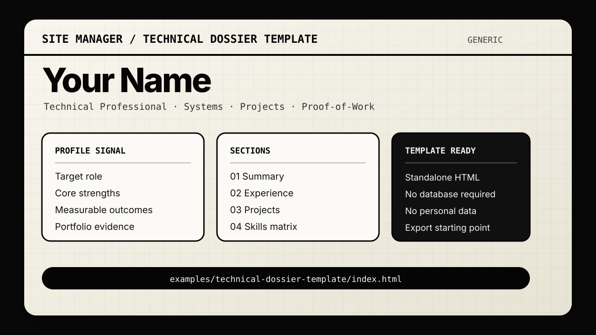

What this page demonstrates
This GitHub Pages site hosts a standalone static export from the repository. It does not need Node.js, SQLite, Docker, or the public/read-only server.
- Version-controlled static preview
- Generic placeholder resume/dossier content
- Safe public demo with no private contact details
- Separate from the installable Site Manager application
Template preview
